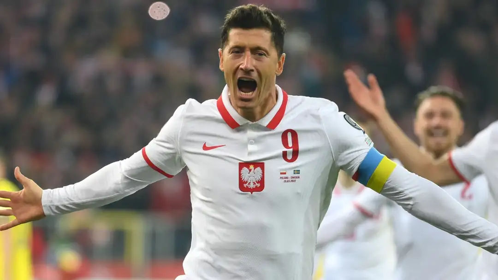

A primeira participação da Polônia na Eurocopa foi na edição de 2008, realizada na Áustria e na Suíça. Nessa ocasião, a Polônia foi eliminada na fase de grupos do torneio.

TÍTULOS
A Polônia ainda não conquistou nenhum título na Eurocopa. Sua participação no torneio começou em 2008, mas até agora não conseguiu avançar além da fase de grupos em nenhuma das edições em que participou.
MELHORES MOMENTOS
A Polônia está no Grupo D da Euro 2024. Além de Holanda, a equipe enfrentará a Áustria, na segunda rodada, e fechará a fase de grupos contra a França. Lewandowski busca se recuperar para os jogos subsequentes, mas sua presença em campo não é garantida.